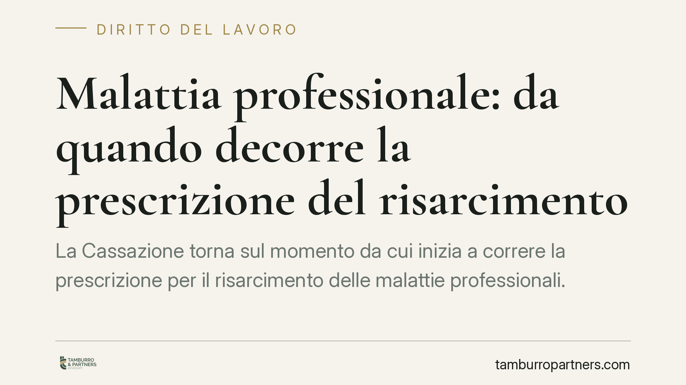

Malattia professionale: da quando decorre la prescrizione del risarcimento
La Cassazione torna sul momento da cui inizia a correre la prescrizione per il risarcimento delle malattie professionali. Non conta la data della diagnosi, ma quella in cui il lavoratore o i suoi eredi possono ragionevolmente percepire il legame tra la patologia e l'attività svolta. Un principio decisivo per le tecnopatie a lunga latenza, dove i sintomi emergono anni dopo l'esposizione.

Il caso
Un bracciante agricolo si ammala di microcitoma polmonare, una forma aggressiva di tumore. L'INAIL riconosce la patologia come tecnopatia — cioè malattia di origine professionale — nel 2022. La famiglia del lavoratore agisce contro la società agricola per ottenere il risarcimento del danno differenziale, ossia la parte di danno non coperta dall'indennizzo INAIL.
La difesa dell'impresa eccepisce la prescrizione: a suo dire il diritto sarebbe estinto perché sarebbe trascorso troppo tempo dalla manifestazione della malattia. La questione arriva in Corte di Cassazione, Sezione Lavoro. L'estremo esatto della pronuncia (numero e anno) è in corso di verifica e verrà integrato non appena disponibile il testo ufficiale.
Inquadramento normativo
La regola generale è nell'art. 2935 del Codice civile: la prescrizione decorre dal giorno in cui il diritto può essere fatto valere. Nelle malattie a lunga latenza questo giorno non coincide con la diagnosi clinica, ma con il momento in cui la patologia e il suo nesso causale con il lavoro sono divenuti *ragionevolmente percepibili* dal danneggiato usando l'ordinaria diligenza. È un principio consolidato: il diritto non può prescriversi prima che il titolare sia in condizione di conoscerne l'esistenza.
Un punto spesso trascurato riguarda quale termine si applichi. La responsabilità del datore di lavoro per la salute dei dipendenti nasce dall'art. 2087 c.c., che impone di adottare le misure necessarie a tutelare l'integrità fisica e la personalità morale del lavoratore. Trattandosi di responsabilità contrattuale — legata cioè all'inadempimento di un obbligo del rapporto di lavoro — il termine di prescrizione è quello ordinario decennale (art. 2946 c.c.).
Diverso è il caso in cui l'azione venga inquadrata come responsabilità extracontrattuale ex art. 2043 c.c.: qui opera il termine più breve di cinque anni previsto dall'art. 2947 c.c. La qualificazione non è un dettaglio: incide direttamente sul tempo utile per agire e va valutata in base ai rapporti concreti tra le parti.
Cosa cambia
Per il lavoratore malato — e per i suoi eredi quando la patologia ha esito infausto — il messaggio è che il tempo non inizia a scorrere da un dato meramente clinico. Occorre che il soggetto possa collegare, con ragionevolezza, la malattia all'attività svolta.
Il riconoscimento INAIL della tecnopatia può costituire un possibile indice rilevante di questa consapevolezza, ma non funziona come *dies a quo* automatico: non fissa da solo l'inizio della prescrizione. È un elemento da valutare caso per caso, insieme alla storia clinica, all'informazione ricevuta e alle circostanze concrete.
La distinzione tra lavoratore ed eredi ha un peso proprio. Se il lavoratore è deceduto, gli eredi fanno valere sia il danno *iure hereditatis* (trasmesso dal defunto) sia il danno *iure proprio* (subìto direttamente per la perdita del congiunto). Le due posizioni possono avere momenti di decorrenza distinti, perché distinta è la percepibilità del pregiudizio.
Cosa fare in concreto
- Conservare tutta la documentazione sanitaria: cartelle cliniche, referti, prime diagnosi e successivi accertamenti, annotando le date.
- Ricostruire la storia lavorativa e le esposizioni a fattori di rischio: mansioni, sostanze, ambienti, periodi.
- Custodire il provvedimento di riconoscimento INAIL e la relativa corrispondenza, che documentano il percorso di accertamento del nesso.
- Individuare con precisione il momento in cui il legame tra malattia e lavoro è divenuto ragionevolmente conoscibile: da lì si misura il termine.
- Verificare quale regime — contrattuale o extracontrattuale — sia applicabile alla propria posizione, per calcolare correttamente i tempi.
Nelle tecnopatie il fattore tempo è il vero crinale della controversia: ricostruire con esattezza date e conoscenze è spesso ciò che distingue un'azione ancora esperibile da un diritto ormai estinto.
---
Contributo informativo a cura di Tamburro & Partners – Avv. Giuseppe Tamburro. Non costituisce parere legale.
Ogni storia di lavoro ha i suoi tempi.
Se gestisci HR e vuoi un confronto su contenzioso, ispezioni o licenziamenti, scrivi allo studio. Ti rispondiamo entro un giorno lavorativo.